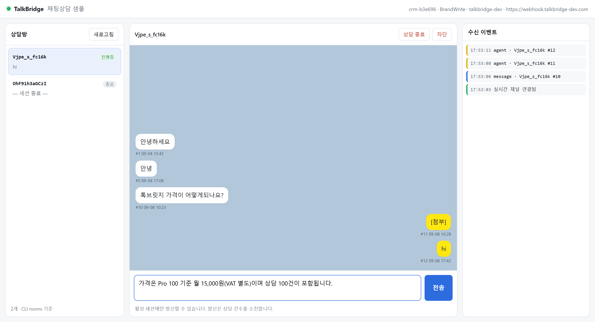

AI 시대의 상담톡,
터미널에서.
TalkBridge CLI × API × MCP
카카오 상담톡을 당신의 터미널, AI 앱, 서버에 잇는 브릿지. 파트너 계약·발송 규격·재시도 같은 채널의 복잡도는 TalkBridge 가 흡수하고, 당신은 수신 웹훅 + 발신 API 두 계약만 다룹니다. AI 와 함께 쓰라고 만든 CLI 가 그 중심에 있습니다.
Get Started
2분이면 첫 답장을 보냅니다
npm install -g @blumn-ai/talkbridge-cli
Node 18+. Windows · macOS(Intel/Apple Silicon) · Linux(x64/arm64) 바이너리가 npm 에 동봉되어 별도 다운로드가 없습니다. 개발자용 dev 채널은 @blumn-dev/talkbridge-cli.
https://mcp.talkbridge.io/mcp
코드 없이. ChatGPT 설정 → 커넥터 → 새로 추가 → MCP 서버, Claude Desktop 설정 → Connectors → Add Custom Connector 에 이 주소를 붙여 넣고 구글 계정으로 한 번 로그인하면 끝. 키·비밀번호가 필요 없습니다. → 연결 가이드
curl -H "Authorization: Bearer $TB_API_KEY" https://api.talkbridge.io/api/agent/me
TalkBridge 센터에서 발급한 Agent 키(BrandWrite)로 REST 발신, 서명 웹훅(HMAC-SHA256)으로 수신. 필드명은 CLI --json 과 동일해 CLI 로 만든 것을 그대로 서버로 옮길 수 있습니다. → 인증 · 발신 API · 웹훅
git clone https://github.com/BlumnAI-Playground/talk-bridge && cd talk-bridge/sample-project/01-cli-gateway
의존성 0개 Node 샘플 3종 — 01 CLI 채팅상담 화면, 02 REST + 호스티드 웹훅, 03 상담지식 그래프 확장편. 실측으로 검증한 참조 구현이라 그대로 복사해 고객 맞춤으로 바꾸면 됩니다.
상담 채널은 무겁고, AI 는 이미 빠릅니다.
카카오 상담톡을 직접 붙이려면 파트너 계약, 발송 규격, 세션 제약, 재시도와 순서 보장까지 전부 당신 몫이었습니다. AI 에이전트를 얹기도 전에 지칩니다.
TalkBridge 는 그 복잡도를 브릿지 안에서 흡수합니다. 당신에게 남는 건 두 계약 — 서명된 수신 웹훅과 발신 API. 그리고 그 둘을 터미널·AI 앱·서버 어디서든 같은 브랜드 키로 쓰는 CLI · MCP · API 세 갈래입니다.

CLI 게이트웨이 하나로 노트북에서 띄운 채팅상담 화면 — 샘플 01, 의존성 0개.
How It Works
고객 한 마디가 답장이 되기까지
카카오톡에서 고객이 말을 걸면 TalkBridge 가 서명된 이벤트로 알리고, 사람이든 AI 든 같은 발신 계약으로 답합니다.
TalkBridge
서명 웹훅 · seq 순서
at-least-once 재시도
답할 수 있나?
AI Agent 가 답장
(MCP · 스킬 · API)
상담원에게 이관
(CLI 게이트웨이 → Discord · Slack · 웹)
고객 카카오톡
답장 도착 · agent echo 로
발신 확인 · 그래프에 적재
고객이 말을 건다
카카오톡 상담톡 — 메시지, 상담 연결, 세션 만료
TalkBridge 가 알린다
HMAC 서명 웹훅, seq 순서, at-least-once 재시도
누가 답할지 정한다
AI 가 답할 수 있으면 자동 답장, 아니면 상담원 채널로 이관
고객에게 도착
같은 발신 계약으로 답장, agent echo 로 확인, 지식 그래프에 적재
Features
무엇이 들어 있나
브랜드 키 하나, 세 갈래
CLI · MCP · API 가 같은 브랜드 키와 같은 대화 흐름을 씁니다. 터미널에서 검증한 것을 AI 앱에 붙이고, 서버로 옮겨도 모델이 바뀌지 않습니다.
AI 와 쓰는 CLI
전역 --json 으로 REST 와 같은 필드명을 한 줄로 돌려줍니다. 스크립트, 에이전트, Claude Code 같은 코딩 도구가 파싱 없이 바로 씁니다. env --json 이 런처 경로까지 알려줍니다.
MCP — 코드 없이 AI 앱에서
MCP 커넥터 주소 하나를 ChatGPT · Claude 에 붙이고 구글 로그인하면 끝. "지금 상담 중인 고객 보여줘", "그 고객에게 답장 보내줘" 로 채널 연결부터 응대까지 AI 가 수행합니다.
서명 웹훅 · at-least-once
HMAC-SHA256 서명, X-Bridge-Delivery-Id 멱등 키, 단조증가 seq. 호스티드 게이트웨이는 원장에 영속되어 재기동 후에도 재시도합니다. 서버가 해야 할 5단계가 문서에 있습니다.
도메인 없이 수신 — 게이트웨이
talkbridge gateway start 가 내 쪽에서 밖으로 붙어 상담을 Discord · Slack · 로컬 웹훅으로 팬아웃합니다. 공인 도메인·TLS·방화벽 없이 노트북과 사내망에서 바로 상담을 받습니다.
상담지식 온톨로지 · AI 상담원
게이트웨이가 상담을 고객→문의→응답 그래프로 적재하고 knowledge search 로 Cypher·자연어 조회. AI 프로바이더를 켜면 엔티티 추출과 스킬 기반 AI 상담원까지 — 온디바이스로 실험합니다.
채널 · CRM · AI · 지식은 설치 후 talkbridge setup 에서 켭니다.
Three Ways In
세 갈래, 하나의 브릿지
누가 쓰느냐에 따라 진입점만 다릅니다. 브랜드 키, 대화 흐름, 필드명은 전부 같습니다.
talkbridge CLI
로그인 한 번으로 상담 조회·발신·삭제·차단·설정. 게이트웨이 데몬이 Discord · Slack · 웹훅 · 온톨로지 싱크로 팬아웃. TUI 마법사, --json, 5개 플랫폼 바이너리.
MCP connector
mcp.talkbridge.io/mcp 를 ChatGPT · Claude Desktop 에 붙이면 채널 온보딩, 상담 조회, 답장, 차단을 자연어로. 내 파트너 계정의 브랜드만 봅니다.
Developer API
api.talkbridge.io REST 발신 + 서명 웹훅 수신. 호스티드 게이트웨이가 영속·재시도를 맡고, 파트너는 2xx 와 멱등만 챙기면 됩니다. 스코프별 Agent 키.